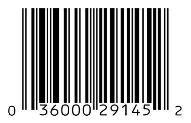

RFID is known as "radio-frequency identification" and refers to a technology where digital data is encoded into smart labels are captured by a reader via radio waves.RFID is similar to barcodes which we are all familiar with, the difference being that RFID can be read outside the line of sight. The technology at one time was only used to track cattle is now being used to track consumer products worldwide.
Roots of RFID technology can be traced back to WWII with Germans, Japanese, Americans and British all using radar—which had been discovered in 1935 by Scottish physicist Sir Robert Alexander Watson-Watt—to warn of approaching planes while they were still miles away. Mario W. Cardullo claims to have received the first U.S. patent for an active RFID tag with rewritable memory on January 23, 1973.
RFID technology is a group of technologies referred to as Automatic Identification and Data Capture (AIDC). AIDC methods consist of automatically identifying objects, collecting data about them, and entering the data directly into a computer system with little to no human intervention. The three components to an RFID system are an RFID tag or smart label, an RFID reader, and an antenna. RFID tags contain an integrated circuit and an antenna, which are then used to transmit data to an RFID reader. The reader then converts the radio waves to a more usuable form of data for a computer.
Many different brands that we are all familiar with utilize this technology to become more innovative and efficient.One of the brands is luxury retailer Neiman Marcus. Neiman Marcus uses RFID to engage their customers with an interactive experience. Customers can step into interactive fitting rooms and interact with touch screen directories. They even have a special mirror known as MemoMi which allows them to change the color or pattern of the piece that they are wearing. All of this is possible through the use of RFID technologies that recognizes products.
RFID can be most beneficial when it comes to enhanced inventory control and loss prevention, where RFID can help give you much greater visibility into and more granular control over your inventory- Emily Mitchell, COO of password-cracking firm Sagitta HPC
Top 3 Uses Of RFID:
Pros and Cons of RFID
| Pro: Inventory Control | Better inventory control leads to better customer experience, especially critical in chains with multiple store locations and hitting the expectations of omnichannel fulfillment. |
| Con:Privacy | Tracking doens't just stop when someone leaves a store, but will actually continue with the shopper as they go about the rest of their day. |
| Pro: Reduce checkout wait times | RFIS will eliminate the need to stand and have each item individually scanned, which will allow for a pretty simple checkout process. |
| Con: Security | RFID tags can be easily cloned if not equipped with a proper authentication mechanism. It can be pretty simple to switch the prices on items in the store. |
Title: What is RFID and How Does RFID Work?
Title: How RFID Works
Title: 5 Examples of Innovative Uses for RFID Technology in Retail
Title:RFID for Retail: Know the Pros and Cons